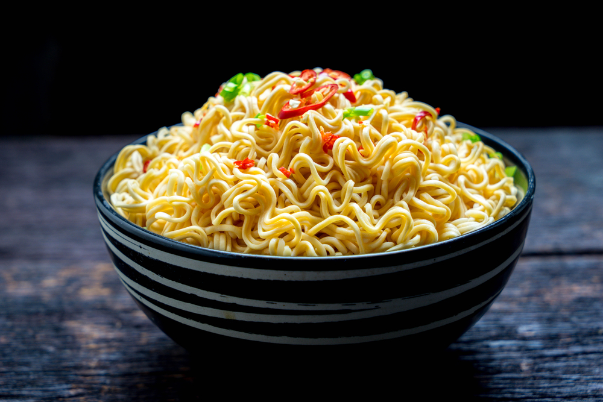

Indomie noodles

Procedure For Cooking Indomie noodles
Indomie noodles is called an "instant noodles" because it takes less time to prepare,
and it doesn't require much ingredients. They normally come with two seasoning packets.
There are various recipes for preparing indomie noodles, but we will only discuss the
"instant fried noodles" recipe.
Ingreidients
- 3 packs of indomie instant noodles
- 5 tables spoons of vegetable oil
- 1 medium sized onion
- 2 plum tomatoes
- 2 large eggs
- 3 baby carrots
- 2 red peppers
- 1 handful of green beans
Steps
-
Boil 400ml of water in a saucepan, add the noodles, and seemer for 3 minutes.
When it is done, remove from the water and drain well.
- cut all the vegetables to small pieces
- Pour 5 tablespoons of vegetable oil in a pan and place it on a stove on medium heat
-
When the oil is hot enough, add all vegetables and season them with salt, peppers
and Whatever seosonings you prefer.
- Whisk the eggs and add salt and pepper
- Fry the egg on another pan till it's ready
-
When the vegetables are soft, add the noodles to the mix until the noodles
are soft.
- Put the noodles in a plate and place the scrambles eggs on it